Alicia & Alexandre
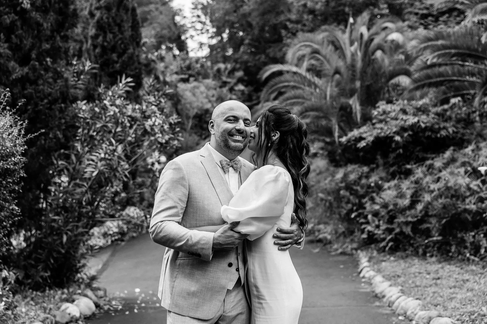
In June 2025, Alicia and Alexandre imagined a wedding devoted to family and friends, designed as an intimate, timeless moment. Nature everywhere, plays of light, candles and green tones created a warm, cosy and enveloping atmosphere: a true bubble of happiness. Their religious ceremony, both moving and festive, carried by a gospel choir, made every heart sing: LOVE was everywhere. Every detail was carefully considered and, with 23 suppliers to coordinate, this once-in-a-lifetime event took on its full meaning. Outstanding service, sublime decor and intense moments of sharing created wild, magical and unforgettable memories.
« Magnificent! Want a “wow” effect for you and your guests? Look no further, you are in the right place. Your tastes are studied in depth beforehand to hit the bullseye. Alexandra keeps up with the latest decor trends, finds the best suppliers for the set-up and has the eye for detail that makes all the difference. We had a scenography that truly reflected us, thanks to the many inspirations she showed us. A design book was created, which became our reference when talking to florists and furniture rental companies. We highly recommend Alexandra: communication was seamless in achieving our goals around our theme. Thank you! »Alicia & Alexandre Translated from French
by Anaïs L


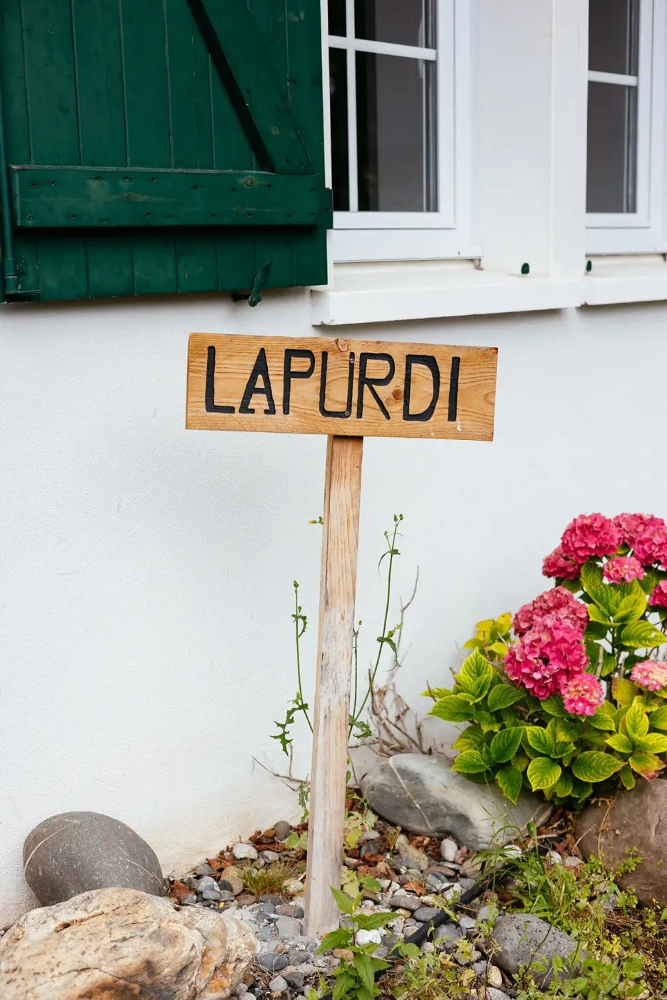
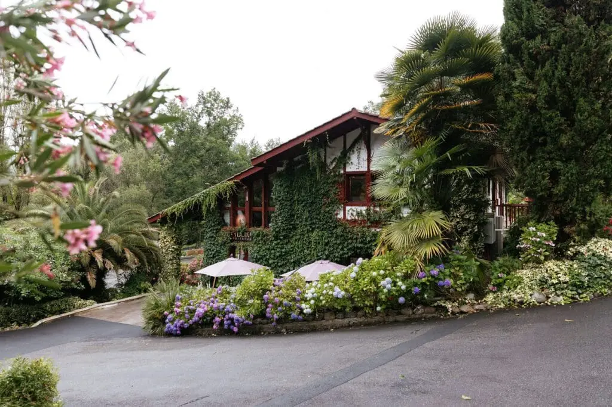
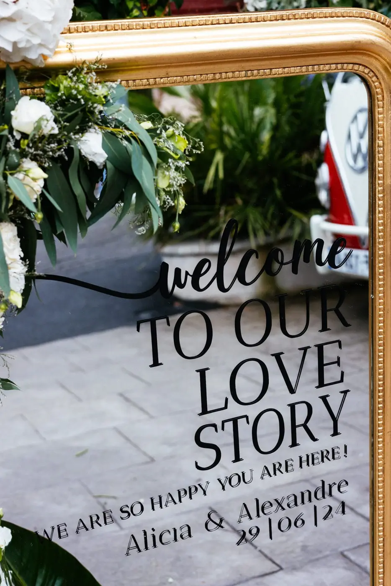


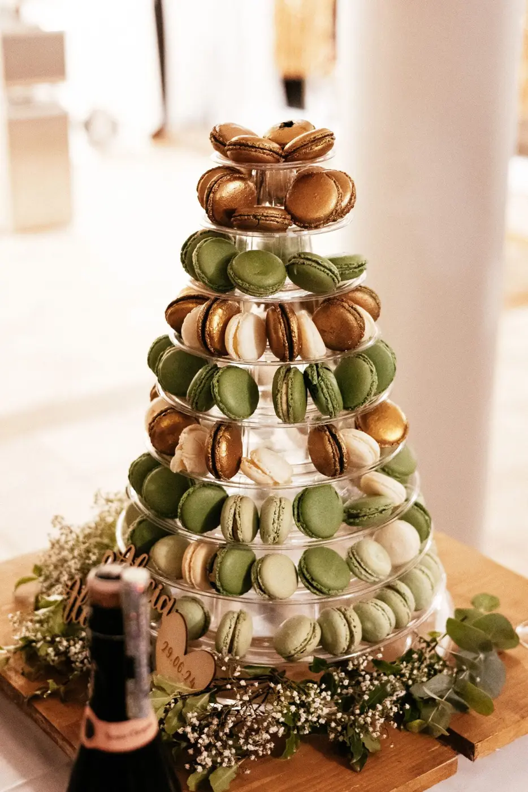


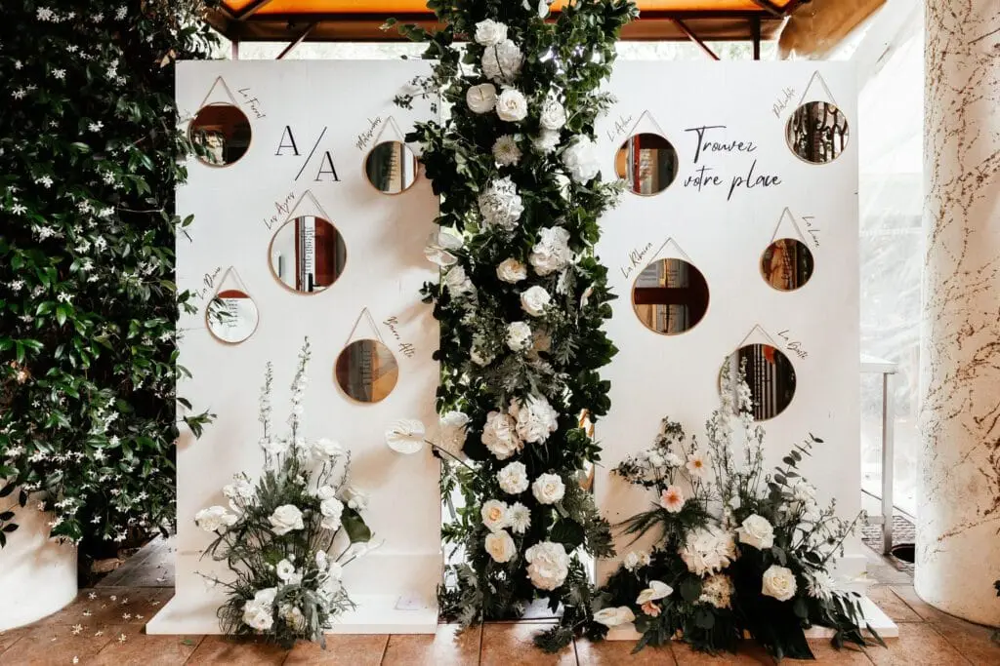

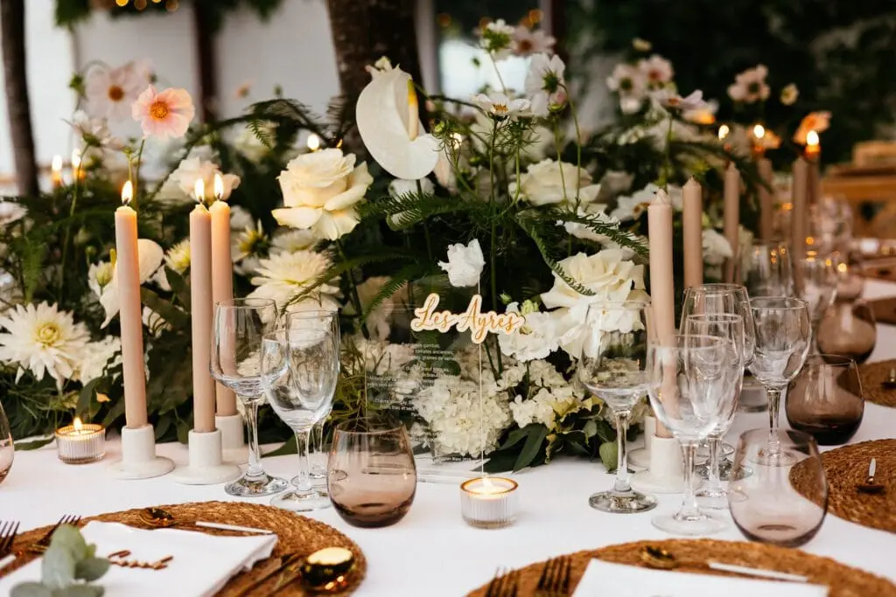

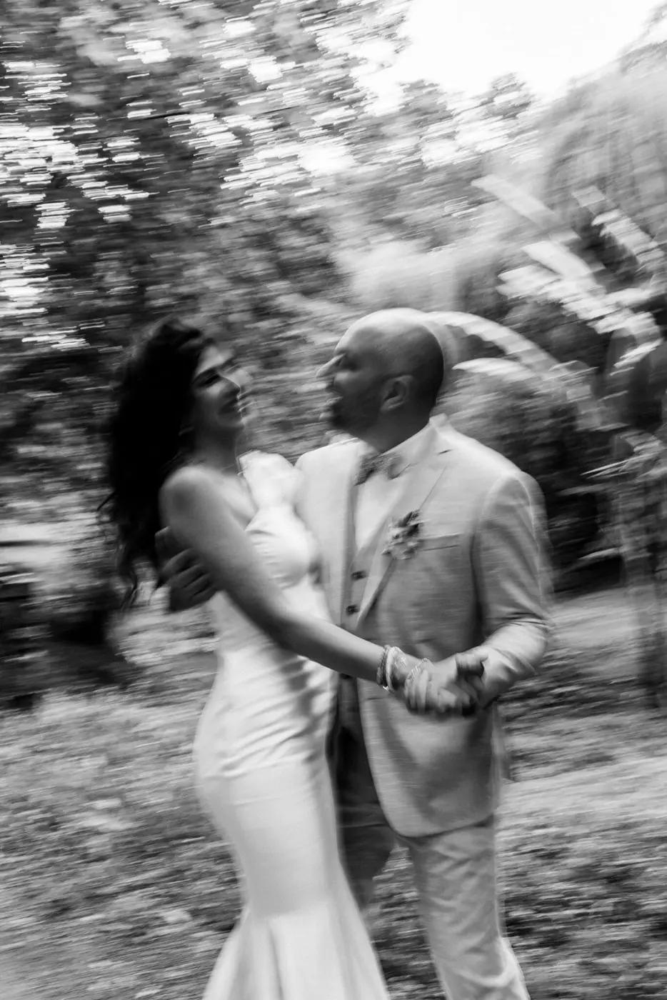
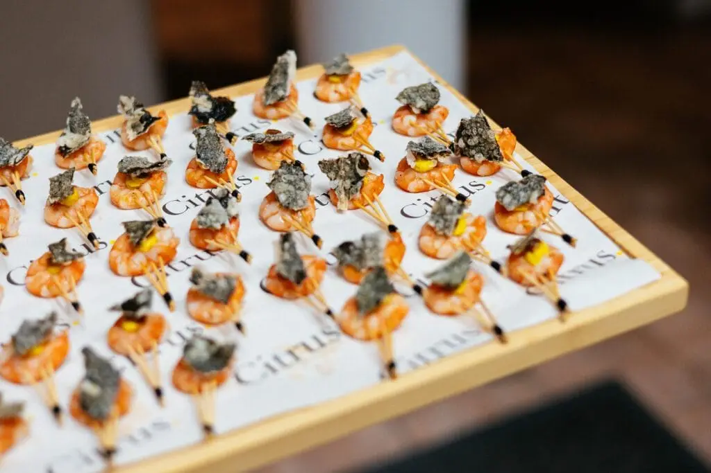


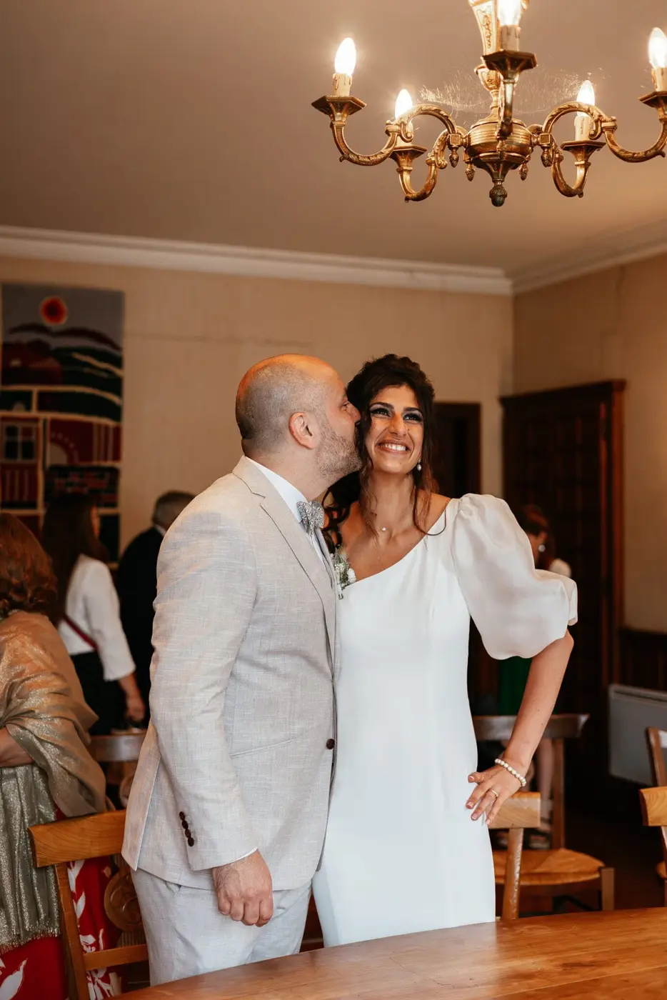


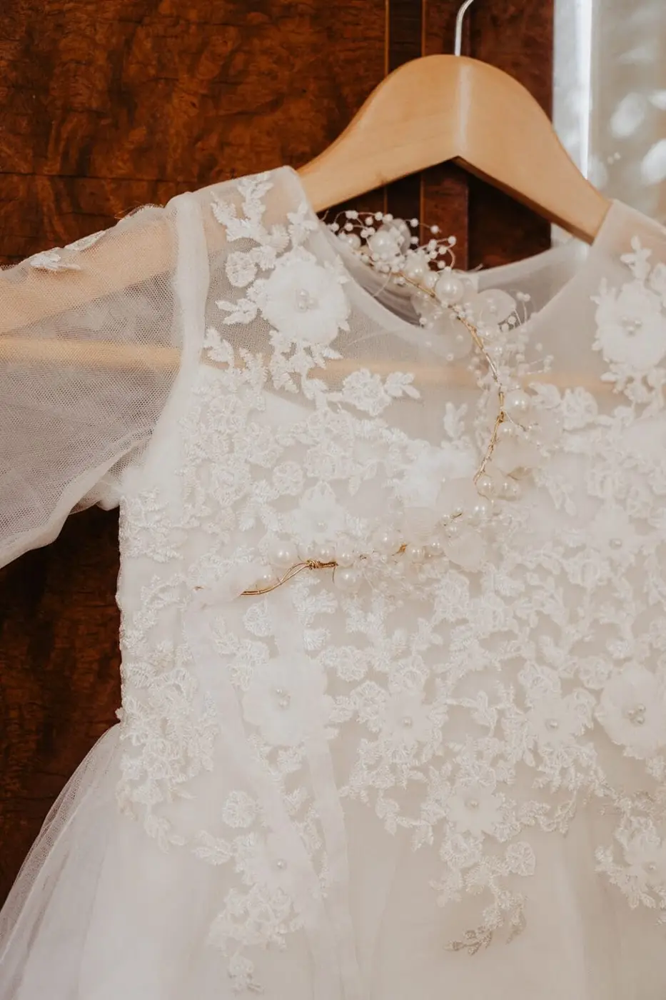
Yvonne & Thomas
Yvonne & Thomas, a Franco-German couple, crossed France to celebrate their union at Château Belle Époque, in the Landes. Conceived as a timeless interlude, their wedding…
Read their story
Chloé & Romain
We never tire of reliving this colourful wedding at La Ferme d'en Chon! A day as sparkling as it was elegant, carried by a voluptuous gown, refined decor inspired by…
Read their story